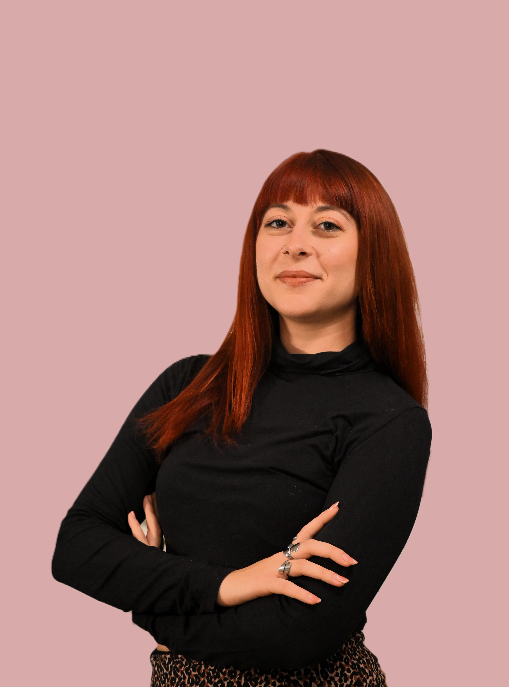
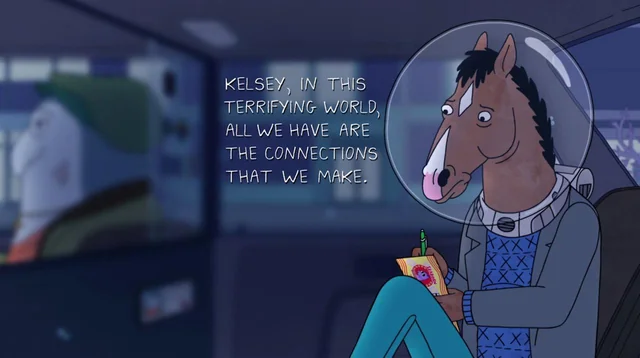

Σχετικά με Εμένα

Ονομάζομαι Δέσποινα Δαριβιανάκη και είμαι αδειούχος Ψυχολόγος & Εκπαιδευόμενη Συστημική Ψυχοθεραπεύτρια.
Η διαδρομή μου στον χώρο της ψυχολογίας ξεκίνησε από μια βαθιά επιθυμία να κατανοήσω το άτομο στην ολότητά του: όχι ως μια μεμονωμένη μονάδα, αλλά σε διαρκή διάλογο με τις σχέσεις, το περιβάλλον και την προσωπική του ιστορία.
«Η ελευθερία είναι θεραπευτική» — Franco Basaglia
Εμπνευσμένη από τη ριζοσπαστική σκέψη του Franco Basaglia, αντιλαμβάνομαι τη θεραπεία όχι ως μια προσπάθεια κανονικοποίησης ή συμμόρφωσης, αλλά ως μια διαδρομή χειραφέτησης. Θεραπεία σημαίνει να αποκτήσουμε χώρο: να απαλλαγούμε από περιοριστικούς ρόλους, να αμφισβητήσουμε έτοιμες βεβαιότητες και να ξαναβρούμε τη φωνή και την αυτενέργειά μας μέσα στις σχέσεις και τον κόσμο.
Το Άτομο μέσα στο Σύγχρονο Τοπίο
Στη σημερινή πραγματικότητα, το άτομο έρχεται αντιμέτωπο με ένα διάχυτο αίσθημα μοναξιάς, επισφάλειας και άγχους. Οι εξαντλητικοί ρυθμοί, ο καταιγισμός πληροφοριών και η διαρκής αγωνία επιβίωσης επιβαρύνουν καθημερινά την ψυχική υγεία. Την ίδια στιγμή, η απομάκρυνση από την κοινότητα και η στροφή στην εξατομίκευση μας αφήνουν συχνά μετέωρες, με την αίσθηση ότι δεν υπάρχει πουθενά στήριγμα, σε έναν κόσμο που μοιάζει ολοένα πιο ανταγωνιστικός και απειλητικός.
Μέσα σε αυτό το πλαίσιο, αν κάποια δυσκολία ή σύμπτωμα μας καταστήσει «μη παραγωγικές», η απάντηση είναι συχνά η περιθωριοποίηση και η παθολογικοποίηση: γρήγορες διαγνώσεις, ειδικοί-αυθεντίες και μια εκτεταμένη ιατρικοποίηση του ανθρώπινου πόνου. Παράλληλα, γινόμαστε μάρτυρες μιας εποχής όπου η ψυχοθεραπεία κινδυνεύει, η θεραπευτική πράξη συμπυκνώνεται σε αποφθέγματα στα σόσιαλ μίντια και η ανάγκη για σύνδεση εκχωρείται σε αλγορίθμους τεχνητής νοημοσύνης.

Η Θεραπευτική Ματιά
Σύνδεση, όχι απομόνωση
Απέναντι σε αυτή τη συνθήκη, η συστημική ψυχοθεραπεία υπενθυμίζει ότι το άτομο δεν υπήρξε ποτέ αποκομμένο: ζει, αναπνέει και συνδιαμορφώνεται σε διαρκή αλληλεπίδραση με το περιβάλλον του. Στο εδώ και τώρα της συνεδρίας, έχει σημασία να φωτίσουμε αυτό ακριβώς το πλαίσιο, να αναγνωρίσουμε τη θέση του ατόμου μέσα στα συστήματα όπου ανήκει και να επανανοηματοδοτήσουμε τις αφηγήσεις που έχουν υφανθεί γύρω από τη ζωή του.
Πέρα από το πρόβλημα, το πρόσωπο
Βασισμένη στην αρχή των Michael White και David Epston ότι «το άτομο δεν είναι το πρόβλημα, το πρόβλημα είναι το πρόβλημα», αντιλαμβάνομαι τη θεραπευτική πράξη ως έναν χώρο όπου καμία διάγνωση δεν αποτελεί ταυτότητα.
Στη συνεδρία δεν χωρούν ετικέτες ή «περιπτώσεις»· συναντώ πρόσωπα με διαδρομές, σχέσεις, αντιστάσεις και επιθυμίες. Μαζί δεν επιδιώκουμε τη βιαστική σίγαση αυτού που σας δυσκολεύει, αλλά ακούμε το νόημα που φέρει, ανοίγοντας χώρο για να υπάρξετε.
Τι θα γινόταν, λοιπόν, αν αφήναμε το σύμπτωμα να μας μιλήσει;
Ένας ασφαλής τόπος ανακατασκευής των αφηγήσεών μας
Οι ιστορίες που λέμε για τον εαυτό μας, αλλά και αυτές που οι άλλοι έχουν γράψει για εμάς, καθορίζουν τον τρόπο που νιώθουμε, σχετιζόμαστε και υπάρχουμε. Στη θεραπεία δημιουργούμε έναν χώρο ασφάλειας και αποδοχής, όπου οι κυρίαρχες αφηγήσεις μπορούν να αμφισβητηθούν, να επανανοηματοδοτηθούν και, τελικά, να ξαναγραφτούν με τους δικούς σας όρους.
Πιστεύω βαθιά ότι η ψυχοθεραπεία είναι μια πράξη συν-δημιουργίας και αυθεντικής αλληλεπίδρασης. Μέσα σε έναν ασφαλή, συμπεριληπτικό χώρο χωρίς κριτική, διερευνούμε μαζί τις ιστορίες που λέμε για τον εαυτό μας, τους ρόλους που καλούμαστε να επιτελέσουμε και τα περιθώρια αναδιαμόρφωσής τους.
Μαγικές συνταγές και έτοιμες λύσεις δεν υπάρχουν. Στη θεραπεία, ο ρόλος μου δεν είναι να επιβάλω ερμηνείες ή να «φορέσω» αναλύσεις, αλλά να σταθώ δίπλα σας καθώς ξετυλίγετε το δικό σας κουβάρι, με σεβασμό στον ρυθμό σας και μέσα στην προστασία των θεραπευτικών ορίων.
Λίγα λόγια για τη συστημική θεραπεία
Κανένας άνθρωπος δεν αποτελεί μια στατική, αμετάβλητη ουσία. Υπό το πρίσμα του κοινωνικού κονστρουξιονισμού, η ταυτότητά μας δεν είναι ένα μονοδιάστατο καλούπι που απλώς «κουβαλάμε», αλλά συγκροτείται διαρκώς μέσα από τις σχέσεις, τον λόγο και τα πολιτισμικά πρότυπα.
Το φύλο, για παράδειγμα, όπως και η κοινωνική μας θέση, δεν είναι απλά βιολογικά ή ατομικά γνωρίσματα· έχουν έναν βαθιά επιτελεστικό χαρακτήρα. Είναι τρόποι ύπαρξης και σωματικές πρακτικές που «κάνουμε» ξανά και ξανά, αναπαράγοντας συχνά προσδοκίες, περιορισμούς και σιωπές που δεν επιλέξαμε ποτέ.
Ακριβώς όμως επειδή η ταυτότητα επιτελείται καθημερινά, δεν είναι ούτε μοιραία ούτε προδιαγεγραμμένη. Ό,τι κατασκευάζεται, μπορεί και να επαναδιαπραγματευτεί. Η θεραπεία ανοίγει έναν χώρο αποσυμπίεσης από τα έτοιμα σχήματα και τις κανονιστικές επιταγές: έναν ασφαλή τόπο όπου μπορείτε να αναστοχαστείτε τους ρόλους που σας στενεύουν, να αποδομήσετε τις επιβεβλημένες βεβαιότητες και να επαναπροσδιορίσετε το ποιες είστε, με αυθεντικότητα και αυτενέργεια.
Σε αυτή τη διαδρομή, κανένα άτομο δεν νοείται αποκομμένο από τον κόσμο του. Στη συστημική ματιά, κάθε σύμπτωμα ή δυσκολία παύει να θεωρείται «ατομική βλάβη» και αποκτά νόημα μέσα στο ζωντανό δίκτυο των σχέσεων όπου γεννήθηκε: στην οικογένεια, στην εργασία, στο σώμα και στις κοινότητες στις οποίες ανήκουμε.
Σπουδές & Διαδρομή
Ολοκλήρωσα τις βασικές μου σπουδές στο Τμήμα Ψυχολογίας του Πανεπιστημίου Ιωαννίνων, όμως η πρώτη ουσιαστική μου συνάντηση με τη θεραπεία έγινε μέσω της πρακτικής μου στο Τμήμα Οικογενειακής Συμβουλευτικής και Θεραπείας του 18ΑΝΩ (Μονάδα Απεξάρτησης Ψ.Ν.Α.). Εκεί, μέσα από τις ιστορίες των ανθρώπων και των οικογενειών τους, ένιωσα τη βαθιά δύναμη των συστημικών δεσμών και ανακάλυψα τη θεραπευτική διάσταση της τέχνης, μια εμπειρία που φώτισε τη μετέπειτα πορεία μου.
Με την επιθυμία να φέρω τη δημιουργική έκφραση στην καρδιά της θεραπείας, εξειδικεύτηκα στη «Συστημική Θεραπεία Παιδιών: Η τέχνη και το παιχνίδι στη συνεδρία» στο Εργαστήριο Συστημικής Ψυχολογίας και Παιδαγωγικής «Ροδάκινο». Ταυτόχρονα, θέλοντας να κατανοήσω σε βάθος τις διαδρομές του ψυχικού πόνου, παρακολούθησα το Μετεκπαιδευτικό Σεμινάριο στην Κλινική Ψυχοπαθολογία «Παναγιώτης Ουλής» (Α' Ψυχιατρική Κλινική Ε.Κ.Π.Α., Ε.Π.Ι.Ψ.Υ. & Προαγωγή της Γνώσης στις Ψυχικές Διαταραχές).
Η διαρκής ανάγκη μου να κατανοώ τον άνθρωπο μέσα στο κοινωνικό του περιβάλλον με οδήγησε στο μεταπτυχιακό πρόγραμμα «Σπουδές Φύλου: Θεωρίες, Μεθοδολογίες, Πολιτικές» του Ελληνικού Ανοικτού Πανεπιστημίου, όπου διερευνώ πώς οι κοινωνικές κατασκευές και οι έμφυλοι ρόλοι διαμορφώνουν τις ζωές μας.
Παράλληλα, εκπαιδεύομαι στο Τετραετές πρόγραμμα Συστημικής Ψυχοθεραπείας στο Εργαστήρι Συστημικής Σκέψης και Ψυχοθεραπείας.
Σήμερα, συναντώ παιδιά, εφήβους και ενήλικες, προσφέροντας έναν ασφαλή, ζεστό και συμπεριληπτικό χώρο — ένα καταφύγιο όπου μπορούμε να συνδεθούμε, να αναρωτηθούμε και να συμπορευτούμε με σεβασμό στον δικό σας ρυθμό.
Διάλεξε μια εικόνα: Πώς νιώθεις μέσα στον κόσμο σήμερα;
Μια μικρή παύση αναστοχασμού μέσα από σύμβολα, μεταφορές και αισθήσεις.
Οι εικόνες που διάλεξες σήμερα:
Κάθε εικόνα που διάλεξες είναι ένα κομμάτι της διαδρομής σου — όχι ολόκληρος ο εαυτός σου.
Συχνά προσπαθούμε να εξηγήσουμε με τη λογική πράγματα που μόνο το σώμα, η φαντασία και το συναίσθημα μπορούν να χωρέσουν. Ό,τι κι αν αποτύπωσαν οι επιλογές σου σήμερα —βάρος, κούραση, αναζήτηση ή ελπίδα— δεν αποτελεί «λάθος» ούτε ελάττωμα. Είναι μια ζωντανή ένδειξη του πώς απαντάς στον κόσμο γύρω σου.
Όπως και στη θεραπευτική σχέση, έτσι κι εδώ, δεν υπάρχει καμία διάθεση να ερμηνεύσουμε βιαστικά ή να «διαγνώσουμε» αυτό που διάλεξες. Υπάρχει μόνο χώρος για περιέργεια, σεβασμό και φροντίδα.
Τι θα γινόταν αν δίναμε σε αυτές τις εικόνες τον χώρο να μιλήσουν; Αν θέλεις να ξετυλίξουμε μαζί το νήμα πίσω από αυτές, είμαι εδώ.